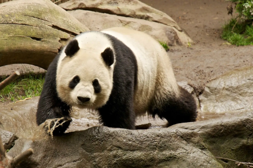

A origem dos pandas é cercada de mistério e fascínio neste artigo vamos aprender mais sobre esses animais intrigantes.
Os ursos pandas, com sua pelagem fofa e manchas adoráveis, têm uma história intrigante que remonta milhões de anos na China. Eles são descendentes de ancestrais carnívoros, mas ao longo do tempo, adaptaram-se a uma dieta exclusivamente vegetariana, principalmente de bambu.
A evolução dos pandas para se tornarem especialistas em bambu é um verdadeiro enigma da natureza. Eles desenvolveram adaptações únicas, como um polegar "falso" que é, na verdade, um osso do pulso modificado, que os ajuda a segurar os brotos de bambu enquanto se alimentam.
Além disso, sua pelagem distintiva de preto e branco pode ter evoluído como uma forma de camuflagem nas densas florestas de bambu onde vivem. Essa coloração ajuda os pandas a se misturarem com a luz filtrada pelas folhas e sombras das árvores.
Apesar de serem uma espécie única e icônica, os pandas gigantes enfrentam desafios significativos, incluindo a perda de habitat devido ao desmatamento e à expansão humana, bem como a baixa taxa de reprodução em cativeiro.
No entanto, com esforços de conservação contínuos e a conscientização sobre a importância de proteger esses tesouros da natureza, esperamos garantir que os ursos pandas continuem a encantar e inspirar as gerações futuras.